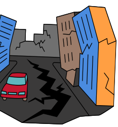
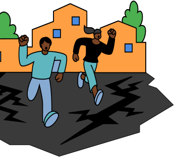

Ensemble, plus forts
face aux catastrophes
Éduquer, protéger et sauver






Les catastrophes naturelles surviennent souvent sans avertissement, mettant chaque année des millions de vies en péril, en particulier celles des enfants,
des personnes âgées et des populations isolées. Guardian offre une solution complète pour renforcer la sécurité et la résilience face à ces crises.
Grâce à des alertes en temps réel, les utilisateurs peuvent anticiper les dangers imminents. Avec des guides interactifs et des exercices pratiques, ils apprennent à se préparer efficacement. Enfin, Guardian aide à se protéger en identifiant rapidement les zones sûres et en fournissant des conseils personnalisés pour faire face aux situations d’urgence.
Source: Unicef.org
Source: Catnat.net
Source: La Croix rouge
Source: LeMonde.fr
Guardian te prévient dès qu’une catastrophe approche ! Grâce à des alertes précises adaptées à l’endroit où tu te trouves, tu peux agir rapidement. Et même sans Internet, l’application reste active pour que tu ne sois jamais pris au dépourvu.
Plus tu connais les dangers, mieux tu peux réagir ! 🧠Apprends en t’amusant avec des quiz et des mini-jeux interactifs. Découvre des vidéos simples et captivantes pour tout comprendre facilement. Relève des défis, gagne des badges et deviens un véritable pro de la survie !
En cas d’urgence, demande de l’aide en un seul clic ! Contacte les secours les plus proches, partage ta position pour qu’ils te trouvent rapidement, et accède aux numéros d’urgence même sans connexion Internet.
En cas de danger, il est important de savoir où aller ! Trouve rapidement un refuge sur une carte interactive, suis le chemin le plus sûr pour t’y rendre et découvre des conseils simples pour réagir correctement.
Nous travaillons avec les meilleures organisations pour te donner les infos les plus sûres.